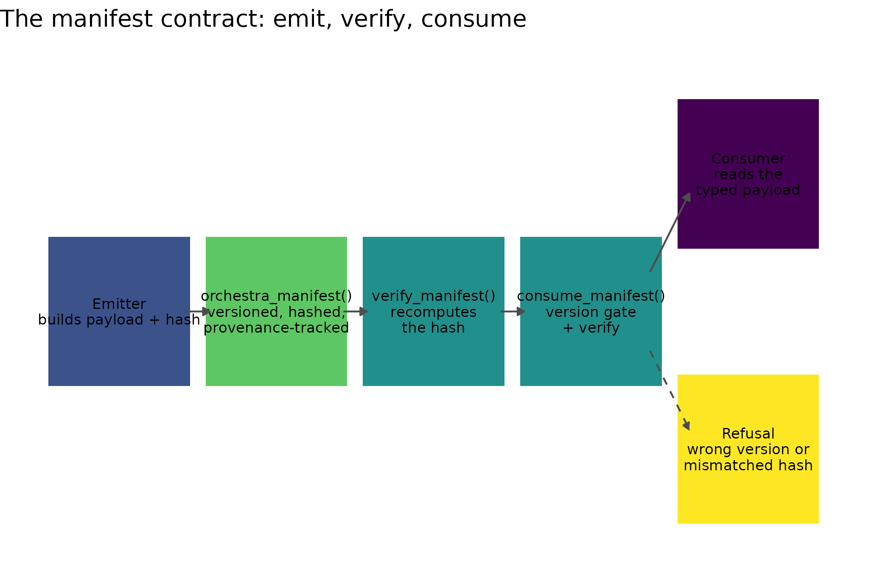

Why
A package author who has just built a new estimator and wants its
result readable by every other member of the orchestra asks a narrow,
practical question: if I hand my result to another package as
an orchestra_manifest, what exactly am I promising
it, and how does it find out the moment I break that promise? This
vignette answers both halves – what the promise is, and what happens
when it is broken, through a corrupted payload, an unrecognised schema
version, or a derived result that has lost track of what it was derived
from.
A collection of analytics components becomes a framework only when one component’s output is another’s input by construction. The alternative is what most multi-package stacks actually do – each component returns its own list or data frame, and every pairing needs a bespoke adapter written by whoever wired it, checked by nobody, and silently wrong the day either side changes shape.
What
The manifest is the single result type that removes those adapters. An emitter fills it in once and every consumer reads the same properties in the same places, whatever produced them. Three properties of the type do the real work.
It is versioned, so a consumer can say which schema it understands and refuse anything else. It is hashed, so a consumer can tell whether the payload it is holding is the payload the emitter sealed. And it is provenance-tracked, so an approximation cannot quietly lose the identity of the thing it approximated.
params <- data.frame(a = c(0.12, 0.15), b = c(1.51, 1.44))
m <- orchestra_manifest(
emitter_package = "example",
emitter_version = "0.1.0",
inferential_target = "parameters",
run_id = "example-001",
method = "example:demo",
seed = 7L,
params = params,
timestamp = as.POSIXct("2026-07-05 09:00:00", tz = "UTC"),
data_hash = manifest_data_hash(params, NULL, NULL, NULL, 7L)
)
m@emitter_package
#> [1] "example"
m@manifest_version
#> [1] "2.0.0-draft"The properties fall into four groups. Identity says what this is and what made it. Semantics says what it is about, drawn from a closed vocabulary a consumer can dispatch on before it inspects any payload.
inferential_targets()
#> [1] "parameters" "predictions" "treatment_effects"
#> [4] "decisions" "breeding_values" "marker_associations"
#> [7] "structure" "consensus"Every current member of the orchestra that emits a manifest declares one of these eight labels, read from that member’s own manifest source rather than re-derived here.
| Inferential target | Emitting member(s) |
|---|---|
| parameters | PESTO, proxymix, optimix, apsimR |
| predictions | gpfield, apsimR |
| treatment_effects | kernR |
| decisions | decideR |
| breeding_values | flexyBayes |
| marker_associations | flexyBayes |
| structure | cdzoo |
| consensus | quorum |
Payload carries the load-bearing content – params,
outputs, weights, obs_target,
summary and seed – and is exactly the set the
hash covers. Provenance records what the result was derived from.
The diagram below draws the promise as a flow, from an emitter building the payload through to a consumer either receiving a typed manifest or being refused.
nodes <- data.frame(
label = c("Emitter\nbuilds payload + hash",
"orchestra_manifest()\nversioned, hashed,\nprovenance-tracked",
"verify_manifest()\nrecomputes\nthe hash",
"consume_manifest()\nversion gate\n+ verify",
"Consumer\nreads the\ntyped payload",
"Refusal\nwrong version or\nmismatched hash"),
x = c(1L, 3L, 5L, 7L, 9L, 9L),
y = c(1, 1, 1, 1, 1.7, 0.3),
kind = c("build", "object", "check", "check", "accept", "refuse"),
stringsAsFactors = FALSE
)
edges <- data.frame(
x = c(1.85, 3.85, 5.85, 7.75, 7.75),
y = c(1, 1, 1, 1.2, 0.8),
xend = c(2.15, 4.15, 6.15, 8.25, 8.25),
yend = c(1, 1, 1, 1.6, 0.4),
path = c("flow", "flow", "flow", "accept", "refuse"),
stringsAsFactors = FALSE
)
ggplot2::ggplot() +
ggplot2::geom_rect(
data = nodes,
ggplot2::aes(xmin = x - 0.9, xmax = x + 0.9, ymin = y - 0.38,
ymax = y + 0.38, fill = kind)
) +
ggplot2::geom_text(
data = nodes, ggplot2::aes(x = x, y = y, label = label),
size = 2.9, lineheight = 0.9
) +
ggplot2::geom_segment(
data = edges,
ggplot2::aes(x = x, y = y, xend = xend, yend = yend, linetype = path),
arrow = ggplot2::arrow(length = ggplot2::unit(0.15, "cm"),
type = "closed"),
colour = "grey30"
) +
ggplot2::scale_fill_viridis_d(name = "stage", guide = "none") +
ggplot2::scale_linetype_manual(
values = c(flow = "solid", accept = "solid", refuse = "dashed"),
guide = "none"
) +
ggplot2::coord_cartesian(xlim = c(0, 10.3), ylim = c(-0.2, 2.3)) +
ggplot2::theme_void() +
ggplot2::labs(title = "The manifest contract: emit, verify, consume")
The emit-verify-consume flow. An emitter builds the hashed, versioned, provenance-tracked manifest; verify_manifest() recomputes the payload hash; consume_manifest() adds the version gate and either hands the consumer a typed manifest or refuses – on a version it does not accept, or a payload whose hash no longer matches.
Do
Emit, verify, consume
The hash is taken over the payload only. Schema version, emitter identity and timestamp are metadata, so re-tagging a manifest leaves an unchanged payload verifying, while any edit to the payload is caught.
verify_manifest(m)$ok
#> [1] TRUE
m@emitter_package <- "relabelled"
verify_after_relabel <- verify_manifest(m)$ok
verify_after_relabel
#> [1] TRUETampering with the payload is a different matter.
tampered <- m
tampered@params$a[1] <- 0.99
verify_tamper <- verify_manifest(tampered)
verify_tamper
#> $ok
#> [1] FALSE
#>
#> $message
#> [1] "data_hash MISMATCH -- manifest payload was modified"verify_manifest() returns its verdict as data because a
consumer often wants to record a failure and carry on with the other
lenses it has. The loud version is consume_manifest(),
which is what a gate should call. It runs three checks – is this a
manifest, is its schema one I accept, does its payload still verify –
and errors on any of them.
run_id_consumed <- consume_manifest(m)@run_id
run_id_consumed
#> [1] "example-001"
consume_manifest(tampered)
#> Error:
#> ! consume_manifest(): integrity check failed -- data_hash MISMATCH -- manifest payload was modifiedThe version check is the one that earns its keep. Coercing silently across a schema boundary is how a pipeline ends up reading a slot that no longer means what it meant when the consumer was written, and the failure surfaces far downstream as a wrong number rather than as an error.
consume_manifest(m, accept = "1.0.0")
#> Error:
#> ! consume_manifest(): manifest_version '2.0.0-draft' is not in the accepted set {1.0.0} -- refusing to consume rather than silently coerce across a schema boundaryProvenance is not optional for a derived result
A manifest that approximates another one records a compact handle to
it. The handle carries the upstream data_hash, not just its
run_id, so a later re-emission that changed the numbers
cannot be passed off as the same input.
lin_m <- manifest_lineage(m)
lin_m
#> $run_id
#> [1] "example-001"
#>
#> $data_hash
#> [1] "sha256:a9ccd7a7a5d98b2859eadf435ad96f8181da4f4d00afe24dc3524fc46607b2c0"
#>
#> $emitter_package
#> [1] "relabelled"
#>
#> $emitter_version
#> [1] "0.1.0"Setting metadata$derived to TRUE turns the
lineage from a convention into a rule the class validator enforces.
orchestra_manifest(
emitter_package = "proxy",
emitter_version = "0.1.0",
inferential_target = "parameters",
run_id = "proxy-001",
method = "proxy:demo",
metadata = list(derived = TRUE),
timestamp = Sys.time(),
data_hash = manifest_data_hash(data.frame(), NULL, NULL, NULL,
NA_integer_)
)
#> Error:
#> ! <orchestraManifest::orchestra_manifest> object is invalid:
#> - a derived manifest must record >= 1 `consumed_manifests` (provenance lineage is required, not optional)A verdict is not an ensemble
A causal test or a decision produces one labelled conclusion, not a
matrix of draws. Forcing it into params as a single-row
table leaves a consumer unable to tell a verdict from a degenerate
posterior, so it gets a typed home of its own in summary.
Because summary is inside the hash, a tampered verdict is
detected exactly like a tampered payload.
verdict <- manifest_summary(
"insufficient evidence",
abstained = TRUE,
abstain_reason = "effective sample size below the floor",
metrics = list(ess = 41)
)
verdict$abstained
#> [1] TRUE
verdict$abstain_reason
#> [1] "effective sample size below the floor"Refusals and abstentions
An abstention is a result, not a failure. A component that will not
stand behind a number should say so in a way a gate can recognise, and
the problem is that recognition used to depend on knowing which
component produced it. More than one component exports a predicate named
is_refusal(), each recognises only its own class, and when
two are attached the bare name resolves to whichever was attached last –
returning FALSE on the other component’s genuine refusal.
That is a silent false negative, and a gate that should have stopped
sails straight through it.
The contract fixes this with a naming convention plus a pair of
producer-agnostic predicates. A structured refusal has a class ending in
_refusal and a structured abstention a class ending in
_abstention, which holds across object systems because the
class vector of an S3 refusal and of an S7 one both end that way.
s3_refusal <- structure(list(why = "no data"), class = "example_refusal")
s7_refusal <- structure(list(),
class = c("example::example_refusal", "S7_object"))
abstention <- structure(list(), class = "example_abstention")
refusal_flags <- c(is_orchestra_refusal(s3_refusal),
is_orchestra_refusal(s7_refusal))
refusal_flags
#> [1] TRUE TRUEGate logic almost always wants the wider union, because a refusal and an abstention mean the same thing to a gate.
decline_flags <- vapply(list(s3_refusal, s7_refusal, abstention, 42),
is_orchestra_decline, logical(1))
decline_flags
#> [1] TRUE TRUE TRUE FALSESeam-side code that mints a refusal of its own has no component name to follow the convention with, so it stamps the explicit marker instead. The stamp is idempotent, and a refusal can therefore pass through several layers without accumulating duplicate classes.
refusal_marker <- as_orchestra_refusal(structure(list(why = "capital firewall"),
class = "list"))
class(refusal_marker)
#> [1] "orchestra_refusal" "list"
identical(as_orchestra_refusal(refusal_marker), refusal_marker)
#> [1] TRUEGrounding tokens
The grounding vocabulary is orthogonal to the refusal contract: a token says how well a fact is evidenced, a refusal says what happened to the control flow. A fact is grounded only when its verification date is present.
g_full <- grounding_token(as.Date(c("2026-07-05", "2026-07-06")))
g_partial <- grounding_token(as.Date(c("2026-07-05", NA)))
g_empty <- grounding_token(as.Date(character(0)))
g_full
#> [1] "grounded"
g_partial
#> [1] "ungrounded"
g_empty
#> [1] "ungrounded"The asymmetry is the point. An empty evidence set is not neutral, it
is the absence of evidence, and a partially checked set is not partially
trustworthy because the consumer cannot tell which element it may lean
on. Both collapse to `ungrounded` so a downstream gate errs
towards abstention. Combining tokens follows the same rule, worst-case
across the inputs.
c_both_grounded <- combine_grounding(c(GROUNDING_GROUNDED, GROUNDING_GROUNDED))
c_mixed <- combine_grounding(c(GROUNDING_GROUNDED, GROUNDING_UNVERIFIED))
c_both_grounded
#> [1] "grounded"
c_mixed
#> [1] "ungrounded"Any other rule – a majority, a mean, an optimistic “at least one” – would let a verdict inherit confidence from its checked inputs while quietly resting on an unchecked one.
Comparing two manifests on meaning, not position
A purely structural conformance check cannot catch a wrong-but-agreed
convention. Two components that both label a column o1 will
compare happily even when one means tonnes per hectare and the other
kilograms per hectare, and the resulting number is wrong by a factor
nobody downstream can recover.
The guard compares the semantic descriptors rather than the column positions, and refuses on a disagreement.
with_unit <- function(unit, run_id) {
orchestra_manifest(
emitter_package = "example",
emitter_version = "0.1.0",
inferential_target = "predictions",
run_id = run_id,
method = "example:demo",
obs_schema = list(outputs = data.frame(name = c("o1", "o2"),
quantity = "grain_yield",
unit = c(unit, "t/ha"))),
timestamp = Sys.time(),
data_hash = manifest_data_hash(data.frame(), NULL, NULL, NULL,
NA_integer_)
)
}
assert_obs_schema_correspondence(with_unit("t/ha", "a"),
with_unit("t/ha", "b"))
assert_obs_schema_correspondence(with_unit("t/ha", "a"),
with_unit("kg/ha", "b"))
#> Error:
#> ! obs_schema correspondence FAILED: outputs column 'o1' disagrees on unit ('t/ha' vs 'kg/ha') -- refusing to compare incommensurable quantities across manifestsThe check is opt-in by presence: when either manifest lacks an
obs_schema it is a graceful no-op, so the guard activates
once both emitters populate the field and no existing pipeline breaks on
the day it lands.
Adapting a component
A component joins the contract by being adapted, not by being
rewritten. It keeps its own result type and a method on
as_orchestra_manifest() lifts that type into a manifest.
Two adapters ship here, for a PESTO ensemble manifest and a
proxymix mixture fit, and each is registered at load time
only when its component is installed.
set.seed(1)
draws <- matrix(stats::rnorm(200), 100, 2, dimnames = list(NULL, c("a", "b")))
fit <- proxymix::fit_proxymix(proxymix::gmm_target_from_samples(draws),
N = 2L, regime = "sample", max_iter = 50L)
proxy <- manifest_from_gmm(fit, seed = 1L, consumed = list(m))
proxy@emitter_package
#> [1] "proxymix"
proxy@metadata$derived
#> [1] TRUE
proxy@consumed_manifests[[1]]$run_id
#> [1] "example-001"
verify_manifest(proxy)$ok
#> [1] TRUETwo class identities, one contract
The contract was a script sourced into a coordination workspace before it was a package. A manifest minted by that reference carries the bare class name, one minted here carries the package-qualified name, and a component that implements the contract without depending on this package mints the bare form too.
class(m)
#> [1] "orchestraManifest::orchestra_manifest"
#> [2] "S7_object"
is_orchestra_manifest(m)
#> [1] TRUEThey are the same contract, so identity is tested on the class name – the part the contract actually fixes – rather than with a strict class check that would reject every manifest emitted anywhere else.
Read
The opening question was what a manifest promises and how a broken
promise is caught. inferential_targets() names 8 closed
labels – including consensus, the label this release adds –
so a consumer can decide whether it understands a manifest before it
inspects any payload. The identity properties
(emitter_package, manifest_version) sit
outside that promise: relabelling m@emitter_package after
the manifest was built leaves verify_manifest(m)$ok at
TRUE, because metadata moved and the payload did not. Editing
params$a[1] by one hundredth instead flips it to FALSE,
reported as data_hash MISMATCH – manifest payload was modified.
consume_manifest() layers the version gate on top of
that same check. Calling it on the tampered manifest refuses with
consume_manifest(): integrity check failed – data_hash MISMATCH –
manifest payload was modified; asking it to accept a version this build
does not emit refuses with consume_manifest(): manifest_version
‘2.0.0-draft’ is not in the accepted set {1.0.0} – refusing to consume
rather than silently coerce across a schema boundary. Both are errors a
caller cannot silently step past, which is the point – a manifest either
verifies under an accepted schema or the pipeline stops there, loudly,
rather than three functions later on a wrong number nobody can trace
back to its source. The provenance rule refuses the same way at
construction: a manifest declaring metadata$derived = TRUE
with no consumed_manifests refuses with
<:orchestra_manifest> object is invalid: - a derived
manifest must record >= 1 consumed_manifests (provenance
lineage is required, not optional), so an approximation cannot be minted
without a traceable handle to what it approximated.
The refusal and abstention predicates close the same gap from the
producer’s side. is_orchestra_refusal() recognises the S3
and the S7 refusal alike (TRUE, TRUE), and the wider
is_orchestra_decline() recognises all three declines but
not the bare integer sitting among them (TRUE, TRUE, TRUE, FALSE) – a
gate written against the union cannot be fooled by which object system
produced the decline. Grounding tokens collapse the same direction: a
partially dated evidence set and an empty one both read ungrounded and
ungrounded, and combining a grounded token with an unverified one keeps
the pair at ungrounded – the worst case of the two, never an average.
The verdict built above carries its own reason rather than a bare flag:
abstained is TRUE because effective sample
size below the floor.
The proxymix adapter carries the same promise across a package
boundary: compressing the class chunk’s manifest through
fit_proxymix() and manifest_from_gmm() returns
an orchestra_manifest whose emitter_package
reads “proxymix”, whose metadata$derived is TRUE, whose
consumed_manifests[[1]]$run_id still names “example-001”,
the manifest it compressed, and whose own hash verifies (TRUE).
Limits
The token-to-emitter table above is read from each member’s own
manifest source at the time of writing – the
inferential_target = "..." literal in its own
R/manifest.R or equivalent, cross-checked against the
constellation roster – not exercised by a call into that package from
here. A member that changed its target without a compatible version bump
would leave the table stale until this vignette is refreshed. Only two
adapters are demonstrated end to end, for PESTO and proxymix, because
those are the two this package ships; the other six members named in the
table implement the contract independently inside their own packages,
each with its own worked example, and are not re-run here.
Every manifest built in this vignette carries a two-parameter toy payload or a hundred-draw mixture fit, small enough to keep the render fast rather than to represent a production-scale ensemble or a spatial field. The cross-implementation oracle that actually grounds the claim that “the same contract” means bit-identical rather than merely similarly shaped – building a manifest under this package and under the reference implementation in separate R sessions and requiring the two digests to match – lives in the package’s test suite, not in this vignette.
What to read next
The Ensemble-Run Manifest: a Portable, Verifiable Record
walks PESTO’s own emission of the manifest this vignette wraps, from the
calibration-ensemble side. Compressing a Bayesian posterior you can
evaluate but not sample is proxymix’s account of the same adapter
from its side, including the compression this vignette only calls once.
A quorum of lenses on Study A0 and Adding a lens are
quorum’s two vignettes, the newest emitter of the consensus
target this release adds. A benchmark harness and recommender for
causal discovery is cdzoo’s account of the structure
target.
Reproduce
Every result in this vignette is a deterministic function of the toy
payload built in the class chunk above, except the proxymix adapter
demonstration, which draws its hundred-observation mixture sample under
set.seed(1). Package versions follow.
sessionInfo()
#> R version 4.6.1 (2026-06-24)
#> Platform: x86_64-pc-linux-gnu
#> Running under: Ubuntu 24.04.5 LTS
#>
#> Matrix products: default
#> BLAS: /usr/lib/x86_64-linux-gnu/openblas-pthread/libblas.so.3
#> LAPACK: /usr/lib/x86_64-linux-gnu/openblas-pthread/libopenblasp-r0.3.26.so; LAPACK version 3.12.0
#>
#> locale:
#> [1] LC_CTYPE=C.UTF-8 LC_NUMERIC=C LC_TIME=C.UTF-8
#> [4] LC_COLLATE=C.UTF-8 LC_MONETARY=C.UTF-8 LC_MESSAGES=C.UTF-8
#> [7] LC_PAPER=C.UTF-8 LC_NAME=C LC_ADDRESS=C
#> [10] LC_TELEPHONE=C LC_MEASUREMENT=C.UTF-8 LC_IDENTIFICATION=C
#>
#> time zone: UTC
#> tzcode source: system (glibc)
#>
#> attached base packages:
#> [1] stats graphics grDevices utils datasets methods base
#>
#> other attached packages:
#> [1] orchestraManifest_0.2.0.9000
#>
#> loaded via a namespace (and not attached):
#> [1] vctrs_0.7.3 cli_3.6.6 knitr_1.52
#> [4] rlang_1.3.0 xfun_0.62 otel_0.2.0
#> [7] textshaping_1.0.5 S7_0.2.2 data.table_1.18.6.1
#> [10] jsonlite_2.0.0 labeling_0.4.3 glue_1.8.1
#> [13] proxymix_0.17.0 htmltools_0.5.9 PESTO_0.11.1.9000
#> [16] ragg_1.5.2 sass_0.4.10 scales_1.4.0
#> [19] rmarkdown_2.32 grid_4.6.1 evaluate_1.0.5
#> [22] jquerylib_0.1.4 fastmap_1.2.0 yaml_2.3.12
#> [25] lifecycle_1.0.5 compiler_4.6.1 mvnfast_0.2.8
#> [28] fs_2.1.0 RColorBrewer_1.1-3 Rcpp_1.1.2
#> [31] systemfonts_1.3.2 farver_2.1.2 digest_0.6.39
#> [34] viridisLite_0.4.3 R6_2.6.1 pillar_1.11.1
#> [37] bslib_0.12.0 withr_3.0.3 tools_4.6.1
#> [40] gtable_0.3.6 pkgdown_2.2.1 ggplot2_4.0.3
#> [43] cachem_1.1.0 desc_1.4.3